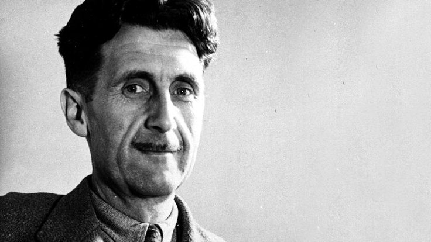

George Orwell (1903-1950)

George Orwell (1903-1950)
1903 yılında Hindistan'da doğdu. İngiliz edebiyatının en önemli isimlerindendir. Asıl ismi Eric Arthur Blair. Babası Hindistan'da görevli bir İngiliz, annesi Fransız asıllıdır. Aristokrat bir ortamda büyüdü. İngiltere'ye döndükten sonra 1922'de Eton College'dan mezun oldu.
Üniversiteye gitmek yerine aile geleneğini sürdürdü, Birmanya'ya giderek İmparatorluk Polis Teşkilatı'na girdi. Aslında edebiyatla ilgilenmek istiyordu. İngilizlerin Birmanyalılara yaptığı baskıları görünce 1928'de polislikten istifa etti ve anılarını 1933'te yayınlanan "Burmese Days" isimli kitabında topladı. Aynı yıl yazdığı "Down and Out in Paris and London" adlı kitabında Paris ve Londra'da geçen günlerini anlattı.
1930'larda kendisini sosyalist olarak tanımladı. Ama gazete muhabiri olarak izlemeye başladığı İspanya İç Savaşı'nda Cumhuriyetçi milislere katıldı. Teğmen rütbesine kadar yükseldi ve bir çatışmada ağır yaralandı. 1937'de komünistlere karşı savaştı. Hayatını tehlikeye attığını düşünerek bu ülkeden ayrıldı. Bu dönem izlenimlerini, 1938'de yayınlanan "Katalonya'ya Selam" adlı kitabında aktardı. İspanya deneyiminden sonra tutucu bir görüş benimsedi.
BBC'nin Hindistan yayınları bölümünün başına getirildi. 1943'te Tribune gazetesinde edebiyat sayfasını yönetmeye başladı.
1944'te en önemli eseri olan ve Rus devrimiyle Stalin'in devrime ihanetini konu alan "siyasal fabl"ı "Hayvanlar Çiftliği"ni yazdı. Eserde, bir çiftlikte yaşayan bir grup hayvan, kendilerini sömüren insanları yönetimden devirip eşitlikçi bir toplum kurar. Ama zamanla aralarındaki zeki ve iktidar düşkünü domuzlar, devrimi yolundan saptırıp insanlardan daha baskıcı ve acımasız diktatörlere dönüşür. Önce bastıracak yayıncı bulamadığı bu kitap, 1945'te yayınlandığında Orwell'e büyük ün ve para kazandırdı.
1949 yılında yayınlanan "1984" adlı romanı da büyük başarı kazandı. Bu romanda olaylar, dünyanın sürekli birbiriyle savaşan üç totaliter devletin egemenliğinde olduğu bir gelecekte geçer. Orwell, bu eserle dünyayı, herşeyin tümüyle devletlerin kontrolünde olduğu belleksiz ve muhalefetsiz bir toplum tehlikesine karşı uyarır. Birçok kişiyi derinden etkileyen bu kitap, "Hayvanlar Çiftliği" gibi 1984'te sinemaya uyarlandı. Bu kitabı yazarken verem tedavisi gören Orwell, Londra'daki bir hastanede yaşamını yitirdi.
George Orwel Eserleri
- Papazın kızı
- Aspidistra
- Hayvan Çiftliği
- Bin Dokuz Yüz Seksen Dört
- Wigan İskelesi Yolu